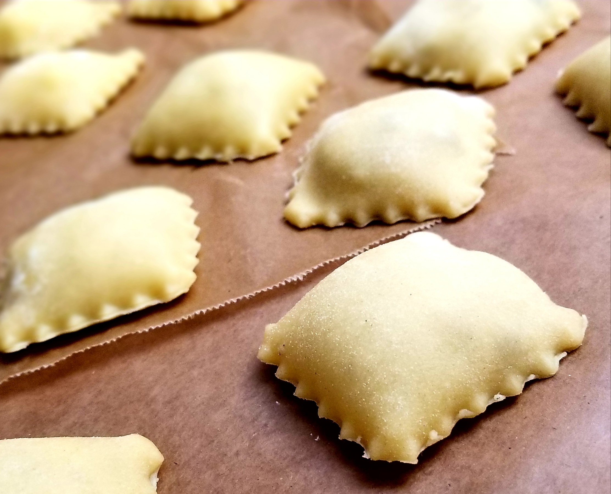

Cheese Ravioli

Simple, delicoius, and cheap!
There is nothing quite like homemade ravioli. When it's well-made, even
a filling as simple as cheese can make the most satisfying meal. The
great news is that you can make excellent ravioli at home.
This recipe makes a lot of ravioli. The intention is that you'll use
some right away and freeze some to have on hand. If you're going to put
the time in to make them, it's nice to make a big batch. But you can
always halve the recipe if you don't need this many. With a little
effort and know-how, you'll be amazed at how you can produce perfect
little pillows of cheesy goodness at home.
Ingredients
- 4 cups all-purpose or '00' flour, plus more for dusting
- 1 teaspoon kosher salt
- 4 large eggs
- 4 large egg yolks
- 2 tablespoons olive oil
- Semolina flour, for dusting
- 4 ounces fresh mozzarella cheese
- 1 ounce Pecorino Romano cheese, finely grated (1/4 cup)
- 1/2 ounce Parmesan cheese, finely grated (about 1/4 cup)
- 1 (15 ounce) container whole-milk ricotta cheese (about 2 cups)
- 1/2 teaspoon kosher salt
- 1/8 teaspoon freshly grated nutmeg (optional)
The steps
Make the pasta dough
- Place 4 cups all-purpose or '00' flour and 1 teaspoon kosher salt in
the bowl of a stand mixer fitted with the dough hook attachment.
Mix on low speed for a few seconds to combine.
- Add 4 large eggs, 4 large egg yolks, and 2 tablespoons olive oil.
Mix on medium-low speed until the dough starts to form a ball and pull
away from the sides of the bowl, scraping down the sides of the bowl and
the dough from the dough hook once or twice, about 5 minutes. If after
1 to 2 minutes your dough still looks crumbly and dry, gradually add up
to 4 tablespoons of cold water, 1 tablespoon at a time, until it comes
together.
- Dust a work surface lightly with all-purpose or '00' flour. Scrape
the dough onto the flour and knead until the dough is smoother, less
sticky, and more elastic, 5 minutes. Wrap the dough tightly in plastic
wrap and refrigerate for at least 20 minutes and up to 24 hours. If
the dough is very cold, let it sit at room temperature for 20 minutes
before rolling it out.
Make the filling
- Drain and cut 4 ounces fresh mozzarella cheese into small cubes; add
to a food processor fitted with the blade attachment. Grate 1 ounce
Pecorino Romano cheese and 1/2 ounce Parmesan cheese on the small holes
of a box grater (1/4 cup each), and add to the food processor.
- Add 1 container ricotta cheese, 1/2 teaspoon kosher salt, and 1/8
teaspoon freshly grated nutmeg if desired. Process until smooth,
scraping down the sides as needed, about 1 minute.
- Transfer the filling to a piping bag fitted with a wide, round tip.
Alternatively, transfer the filling into a large resealable plastic bag
and push into one bottom corner; cut the corner of the bag when you're
ready to fill the ravioli. Refrigerate the filling while you roll out
the pasta dough.
Roll out the pasta dough
- Unwrap the dough and cut into 3 pieces (about 12 ounces each).
Rewrap 2 pieces of the dough in the plastic wrap to keep them from
drying out.
- Roll out each piece of dough: Set a pasta roller to the thickest
setting. Flatten the piece of dough into a thick disk between your
hands, dusting with semolina flour if it feels sticky. Feed it through
the pasta roller. Repeat once or twice. Fold this piece of dough into
thirds, like a letter, and press it between your hands again.
- With the pasta roller still on the widest setting, feed the pasta
crosswise (folded-side in first) between the rollers. Feed it through
once or twice more, until smooth. If desired, repeat this folding step.
This helps to strengthen the gluten in the flour, giving it a chewier
texture when cooked.
- Begin changing the settings on the roller to roll the pasta thinner
and thinner. Roll the pasta 2 or 3 times at each setting (no need to
fold anymore), and don't skip settings (the pasta tends to snag and warp
if you do). If the pasta gets too long to be manageable, lay it on a
cutting board and cut it in half crosswise before you continue rolling.
- Roll the pasta as thin as you can get it, then sprinkle generously
with semolina and lay flat on a parchment paper-lined baking sheet with
sheets of parchment in between each pasta sheet. Repeat until all the
dough is rolled out.
Make the ravioli
- Line a second baking sheet with parchment paper and sprinkle with
semolina flour. Sprinkle a work surface with semolina flour and arrange
a pasta sheet on top with a long side closer to you.
- If the pasta sheet is at least 4 inches wide from top to bottom,
pipe 1 -teaspoon portions of the filling onto the bottom half of the
pasta sheet about 1-inch apart. Gently brush a little water on the top
half of the pasta sheet, then gently fold the top half over the bottom
half.
- If the pasta sheet is less than 4 inches wide, pipe 1 -teaspoon
portions of the filling down the center of the sheet about 1-inch apart.
Gently brush a little water around the border of the sheet. Gently top
with a second sheet of pasta.
- Use your fingers to press out any air bubbles and seal the dough all
the way around each portion of filling. Using a pasta cutter or sharp
knife, cut around each portion of filling to form individual raviolo.
Don't worry if they are not perfect — they will still taste great.
Original Source
Original link to recipe